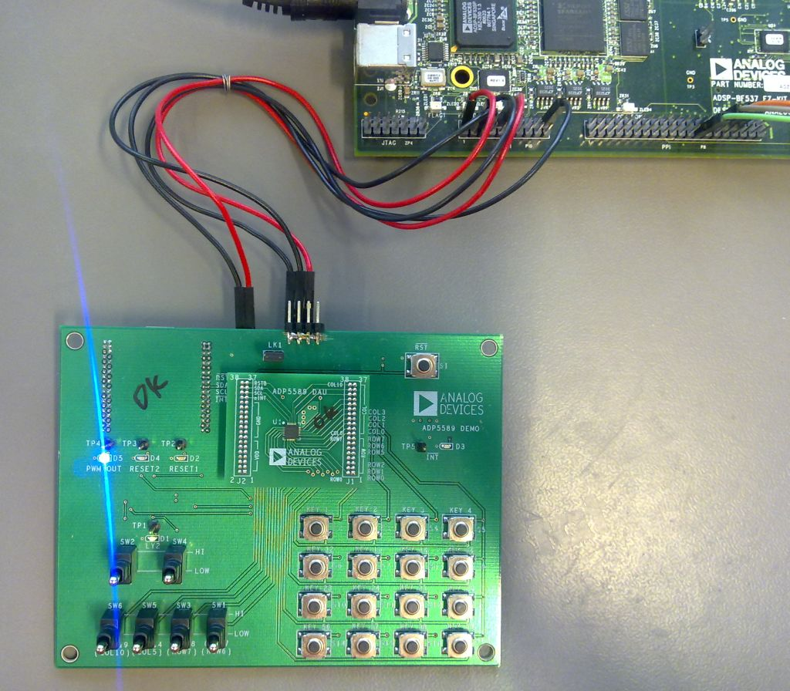
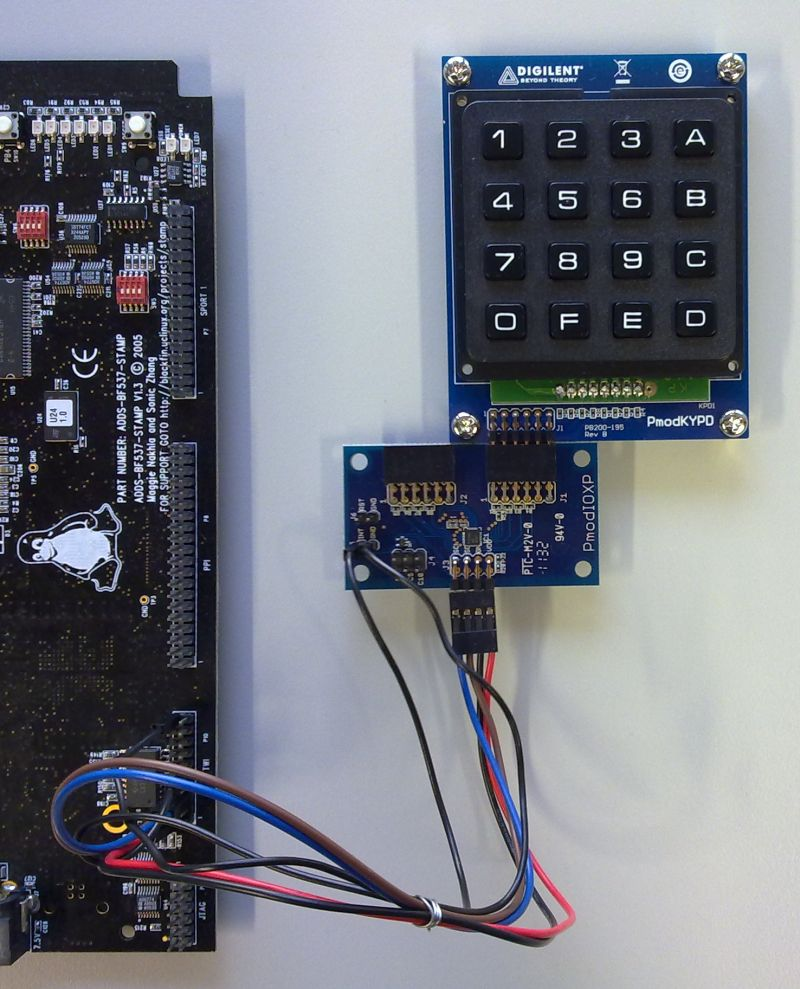

ADP5589 Input Keyboard and GPIO Linux Driver¶
Supported Devices¶
Evaluation Boards¶
Description¶
ADP5589¶
ADP5585¶
Description¶
The driver supports multiple key press detection and resolution. It independently delivers key press and key release events in chronological order to the Linux input device system. This allows SHIFT + ANYKEY, ALT + F1 or CTRL + ALT + DEL sequences. Since the ADP5589 buffers events in its internal FIFO, it’s unlikely that events are lost due to heavy system load and interrupt latencies.
Configuration¶
Software configurable features¶
Configurable keypad size matrix up to 11 × 8 (columns, rows).
Support for switch events.
Enabling and disabling automatic key repeat feature.
Lock/Unlock key feature with configurable timer. (ADP5589 only)
Two independent and flexible reset signal generators with either two or three software configurable keys.
Flexible debounce, 100 kOhm/300kOhm pull-up and 300 kOhm pull-down configuration on all configurable I/Os.
Configurable keypad scan cycle times.
Unused row and column pins are exported as general-purpose inputs/outputs to GPIOLIB
Source Code¶
Status¶
| Source | Mainlined? |
|---|---|
| git | Yes |
Files¶
| Function | File |
|---|---|
| driver | drivers/input/keyboard/adp5589-keys.c |
| include | include/linux/input/adp5589.h |
Example platform device initialization¶
For compile time configuration, it’s common Linux practice to keep board- and application-specific configuration out of the main driver file, instead putting it into the board support file.
Example key-map for an 4x4 matrix as found on the ADP5589 evaluation board.
## include <linux/input/adp5589.h>
static const unsigned short adp5589_keymap[ADP5589_KEYMAPSIZE] = {
[0] = KEY_1,
[1] = KEY_2,
[2] = KEY_3,
[3] = KEY_BACKSPACE,
[11] = KEY_4,
[12] = KEY_5,
[13] = KEY_6,
[15] = KEY_DOT,
[22] = KEY_7,
[23] = KEY_8,
[24] = KEY_9,
[25] = KEY_ESC,
[55] = KEY_UP,
[56] = KEY_0,
[57] = KEY_DOWN,
[58] = KEY_ENTER,
};
Unused row and column pins are exported as general-purpose inputs/outputs to GPIOLIB starting at gpio number 50.
Note
use gpio_start = -1 for dynamic allocation
static const struct adp5589_gpio_platform_data adp5589_gpio_data = {
.gpio_start = 50,
};
Declare two Input Switch Events (EV_SW), mapped to ROW6 and ROW7.
static const struct adp5589_gpi_map adp5589_gpimap[] = {
{
.pin = ADP5589_GPI_PIN_ROW6,
.sw_evt = SW_KEYPAD_SLIDE,
},{
.pin = ADP5589_GPI_PIN_ROW7,
.sw_evt = SW_CAMERA_LENS_COVER,
}
};
static struct adp5589_kpad_platform_data adp5589_kpad_data = {
/* KEYPAD Config */
.keypad_en_mask = ADP_COL(0) | ADP_COL(1) | ADP_COL(2) | ADP_COL(3) |
ADP_ROW(0) | ADP_ROW(1) | ADP_ROW(2) | ADP_ROW(5),
.keymap = adp5589_keymap,
.keymapsize = ARRAY_SIZE(adp5589_keymap),
.repeat = false,
.scan_cycle_time = ADP5589_SCAN_CYCLE_10ms,
/* GPI Switch Event Config */
.gpimap = adp5589_gpimap,
.gpimapsize = ARRAY_SIZE(adp5589_gpimap),
/* PULL Config */
.pullup_en_300k = ADP_COL(4) | ADP_COL(5) | ADP_COL(6) | ADP_COL(7) |
ADP_COL(8) | ADP_COL(9) | ADP_COL(10) |
ADP_ROW(3) | ADP_ROW(4) | ADP_ROW(6) | ADP_ROW(7),
/* GPIO Config */
.gpio_data = &adp5589_gpio_data,
/* RESET 1 Config */
.reset_cfg = RESET_PULSE_WIDTH_10ms | RESET_TRIG_TIME_2000ms | RESET1_POL_LOW,
.reset1_key_1 = KEY_1,
.reset1_key_2 = KEY_2,
.reset1_key_3 = KEY_ESC,
};
Declaring I2C devices¶
Unlike PCI or USB devices, I2C devices are not enumerated at the hardware level. Instead, the software must know which devices are connected on each I2C bus segment, and what address these devices are using. For this reason, the kernel code must instantiate I2C devices explicitly. There are different ways to achieve this, depending on the context and requirements. However the most common method is to declare the I2C devices by bus number.
This method is appropriate when the I2C bus is a system bus, as in many embedded systems, wherein each I2C bus has a number which is known in advance. It is thus possible to pre-declare the I2C devices that inhabit this bus. This is done with an array of struct i2c_board_info, which is registered by calling i2c_register_board_info().
So, to enable such a driver one need only edit the board support file by adding an appropriate entry to i2c_board_info.
For more information see: Documentation/i2c/instantiating-devices.rst
| ADI part number | I2C_BOARD_INFO Name |
|---|---|
| ADP5589 | adp5589-keys |
| ADP5585-00 | adp5585-keys |
| ADP5585-02 | adp5585-02-keys |
static struct i2c_board_info __initdata board_i2c_board_info[] = {
## if defined(CONFIG_KEYBOARD_ADP5589) || defined(CONFIG_KEYBOARD_ADP5589_MODULE)
{
I2C_BOARD_INFO("adp5589-keys", 0x34),
.irq = IRQ_PG0,
.platform_data = &adp5589_kpad_data,
},
## endif
};
static int __init board_init(void)
{
[--snip--]
i2c_register_board_info(0, board_i2c_board_info,
ARRAY_SIZE(board_i2c_board_info));
[--snip--]
return 0;
}
arch_initcall(board_init);
Adding Linux driver support¶
Configure kernel with “make menuconfig” (alternatively use “make xconfig” or “make qconfig”)
Note
The ADP5589 Driver depends on CONFIG_I2C
--- Input Device Support
<*> Generic input layer (needed for keyboard, mouse, ...)
< > Support for memoryless force-feedback devices
--- Userland interfaces
< > Mouse interface
< > Joystick interface
< > Touchscreen interface
<M> Event interface
< > Event debugging
--- Input Device Drivers
** [*] Keyboards --->**
--- Keyboards
< > ADP5588/87 I2C QWERTY Keypad and IO Expander
**<M> ADP5589 ADP5585 I2C QWERTY Keypad and IO Expander**
< > AT keyboard
< > Atmel AT42QT1070 Touch Sensor Chip
< > Atmel AT42QT2160 Touch Sensor Chip
< > DECstation/VAXstation LK201/LK401 keyboard
< > GPIO Buttons
< > Polled GPIO buttons
< > TCA6416/TCA6408A Keypad Support
< > GPIO driven matrix keypad support
< > Maxim MAX7359 Key Switch Controller
< > MELFAS MCS Touchkey
< > Freescale MPR121 Touchkey
< > Newton keyboard
< > OpenCores Keyboard Controller
< > Stowaway keyboard
< > Sun Type 4 and Type 5 keyboard
< > XT keyboard
[ ] Mouse --->
[ ] Joysticks --->
[ ] Touchscreens --->
[ ] Miscellaneous devices --->
Hardware I/O ports --->
Hardware configuration¶
{kind=link}
There is no dedicated Blackfin STAMP evaluation board for the ADP5589. During test and driver development we used the ADP5589 Demo Mother/Daughter Board.
It can be easily wired to the Blackfin STAMP TWI/I2C header.
| BF537-STAMP (P10) TWI/I2C header | ADP5589 Daughter Board | |
|---|---|---|
| PIN | Function | PIN/Function |
| 2 | (+3.3V) | VDD |
| 5 | SCL | SCL |
| 6 | SDA | SDA |
| 10 | PORTG0 | /INT |
| 20 | GND | GND |
Driver testing¶
Driver loading¶
root:/> **modprobe adp5589_keys**
**input: adp5589-keys as /devices/platform/i2c-bfin-twi.0/i2c-0/0-0034/input/input0**
**adp5589_keys 0-0034: Rev.0 keypad, irq 66**
Keypad test¶
root:/> **modprobe evdev**
Simple event test utility¶
root:/> **event_test /dev/input/event0**
Input driver version is 1.0.1
Input device ID: bus 0x18 vendor 0x1 product 0x1 version 0x0
Input device name: "adp5589-keys"
Supported events:
Event type 0 (Sync)
Event type 1 (Key)
Event code 1 (Esc)
Event code 2 (1)
Event code 3 (2)
Event code 4 (3)
Event code 5 (4)
Event code 6 (5)
Event code 7 (6)
Event code 8 (7)
Event code 9 (8)
Event code 10 (9)
Event code 11 (0)
Event code 14 (Backspace)
Event code 28 (Enter)
Event code 52 (Dot)
Event code 103 (Up)
Event code 108 (Down)
Event type 5 (Switch)
Event code 9 (?)
Event code 10 (?)
Testing ... (interrupt to exit)
Event: time 212452.773693, type 1 (Key), code 2 (1), value 1
Event: time 212452.773708, -------------- Report Sync ------------
Event: time 212452.967254, type 1 (Key), code 2 (1), value 0
Event: time 212452.967264, -------------- Report Sync ------------
Event: time 212453.173026, type 1 (Key), code 3 (2), value 1
Event: time 212453.173040, -------------- Report Sync ------------
Event: time 212453.347251, type 1 (Key), code 3 (2), value 0
Event: time 212453.347261, -------------- Report Sync ------------
Event: time 212453.885500, type 1 (Key), code 14 (Backspace), value 1
Event: time 212453.885515, -------------- Report Sync ------------
Event: time 212454.030671, type 1 (Key), code 14 (Backspace), value 0
Event: time 212454.030680, -------------- Report Sync ------------
Event: time 212454.702005, type 1 (Key), code 1 (Esc), value 1
Event: time 212454.702019, -------------- Report Sync ------------
Event: time 212454.876222, type 1 (Key), code 1 (Esc), value 0
Event: time 212454.876232, -------------- Report Sync ------------
Event: time 212455.182126, type 1 (Key), code 28 (Enter), value 1
Event: time 212455.182139, -------------- Report Sync ------------
Event: time 212455.395101, type 1 (Key), code 28 (Enter), value 0
Event: time 212455.395111, -------------- Report Sync ------------
Event: time 212456.614392, type 1 (Key), code 103 (Up), value 1
Event: time 212456.614407, -------------- Report Sync ------------
Event: time 212456.846672, type 1 (Key), code 103 (Up), value 0
Event: time 212456.846683, -------------- Report Sync ------------
Event: time 212459.236095, type 1 (Key), code 28 (Enter), value 1
Event: time 212459.236110, -------------- Report Sync ------------
Event: time 212459.458719, type 1 (Key), code 28 (Enter), value 0
Event: time 212459.458728, -------------- Report Sync ------------
Event: time 212463.264521, type 5 (Switch), code 10 (?), value 1
Event: time 212463.264536, -------------- Report Sync ------------
Event: time 212464.528812, type 5 (Switch), code 10 (?), value 0
Event: time 212464.528823, -------------- Report Sync ------------
GPIO test¶
In this particular configuration example, GPIO50 will map to ROW3. For more information read GPIO Kernel Documentation
Access using the sysfs interface for userspace¶
root:/> **cd sys/class/gpio/**
root:/sys/class/gpio> **ls**
export gpiochip0 gpiochip50 unexport
root:/sys/class/gpio> **echo 50 > export**
root:/sys/class/gpio> **ls**
export gpio50 gpiochip0 gpiochip50 unexport
root:/sys/class/gpio> **cd gpio50**
root:/sys/devices/virtual/gpio/gpio50> **ls**
active_low direction subsystem uevent value
root:/sys/devices/virtual/gpio/gpio50> **echo low > direction**
root:/sys/devices/virtual/gpio/gpio50> **echo high > direction**
PMOD-IOXP¶
The PMOD-IOXP is an PMOD board made by Digilent Inc. which features the ADP5589.
The following example shows how to connect the PMOD-IOXP to a Blackfin BF537-STAMP board and a PMOD-KYPD. Also
Hardware configuration¶
{kind=link}
| BF537-STAMP (P10) TWI/I2C header | PMOD-IOXP | |
|---|---|---|
| PIN | Function | PIN/Function |
| 2 | (+3.3V) | VDD |
| 5 | SCL | SCL |
| 6 | SDA | SDA |
| 10 | PORTG0 | /INT |
| 20 | GND | GND |
Software configuration¶
## include <linux/input/adp5589.h>
static const unsigned short adp5589_keymap[ADP5589_KEYMAPSIZE] = {
[ADP5589_KEY(0, 0)] = KEY_D,
[ADP5589_KEY(0, 1)] = KEY_C,
[ADP5589_KEY(0, 2)] = KEY_B,
[ADP5589_KEY(0, 3)] = KEY_A,
[ADP5589_KEY(1, 0)] = KEY_E,
[ADP5589_KEY(1, 1)] = KEY_9,
[ADP5589_KEY(1, 2)] = KEY_6,
[ADP5589_KEY(1, 3)] = KEY_3,
[ADP5589_KEY(2, 0)] = KEY_F,
[ADP5589_KEY(2, 1)] = KEY_8,
[ADP5589_KEY(2, 2)] = KEY_5,
[ADP5589_KEY(2, 3)] = KEY_2,
[ADP5589_KEY(3, 0)] = KEY_0,
[ADP5589_KEY(3, 1)] = KEY_7,
[ADP5589_KEY(3, 2)] = KEY_4,
[ADP5589_KEY(3, 3)] = KEY_1,
};
static struct adp5589_kpad_platform_data adp5589_kpad_data = {
/* KEYPAD Config */
.keypad_en_mask = ADP_COL(0) | ADP_COL(1) | ADP_COL(2) | ADP_COL(3) |
ADP_ROW(0) | ADP_ROW(1) | ADP_ROW(2) | ADP_ROW(3),
.keymap = adp5589_keymap,
.keymapsize = ARRAY_SIZE(adp5589_keymap),
.repeat = false,
.scan_cycle_time = ADP5589_SCAN_CYCLE_10ms,
/* PULL Config */
.pullup_en_300k = ADP_COL(4) | ADP_COL(5) | ADP_COL(6) | ADP_COL(7) |
ADP_COL(8) | ADP_COL(9) | ADP_COL(10) |
ADP_ROW(4) | ADP_ROW(5) | ADP_ROW(6) | ADP_ROW(7),
/* RESET 1 Config */
.reset_cfg = RESET_PULSE_WIDTH_10ms | RESET_TRIG_TIME_2000ms | RESET1_POL_LOW,
.reset1_key_1 = KEY_1,
.reset1_key_2 = KEY_2,
.reset1_key_3 = KEY_ESC,
};
static struct i2c_board_info __initdata bfin_i2c_board_info[] = {
{
I2C_BOARD_INFO("adp5589-keys", 0x34),
.platform_data = &adp5589_kpad_data,
.irq = IRQ_PG0,
},
}
More Information¶
Linux-Input mailing list: linux-input@vger.kernel.org
Need Help?